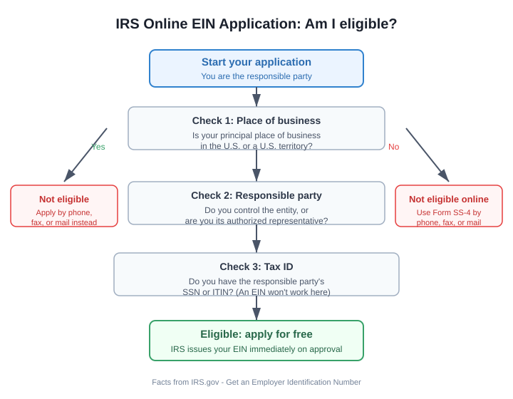

How to Get an EIN: The Free, IRS-Sourced Way to Get Your Business Tax ID
The short version
TL;DR: An EIN (Employer Identification Number) is a free 9-digit tax ID that the IRS issues to your business, and the only place you ever need to get one is the IRS itself. The online application at IRS.gov takes about 15 minutes and, if approved, issues your EIN immediately in the same session. The IRS never charges a fee for an EIN, so any site that asks you to pay to "help" or "expedite" it is a trap.What is an EIN and does your LLC actually need one?
An EIN is the business equivalent of a Social Security number. It's a 9-digit number (something like 12-3456789) that the IRS assigns to corporations, partnerships, LLCs, sole proprietors, estates, and trusts for tax filing and reporting. You do not have to be an employer to get one; the name is a leftover from the 1970s and almost everyone uses it.
The IRS lists the common reasons you'll need an EIN: hiring employees, operating a partnership or corporation, paying sales and excise taxes, changing business structure or ownership, and administering certain trusts, retirement plans, and estates.
For a single-member LLC filing as a disregarded entity, an EIN is technically optional in some cases, but it's a good idea for almost every real business. It keeps your SSN off paperwork, and banks and payment processors almost always want one before they'll open a business account. It's free and takes one session.
Should you get an EIN before or after forming your LLC?
Form your entity with your state first. The IRS is direct about this: if you're forming an LLC, partnership, corporation, or tax-exempt organization, form the entity through your state before you apply for an EIN. If you apply first, the IRS says your EIN application may be delayed because they need your legal entity name to match state records.
So the order is usually: pick a business name, file your LLC formation documents with your state, then apply for the EIN. Once your state approves the entity, you have the legal name and date you'll be asked for on the IRS application.
Is the IRS EIN application really free?
This is the trap to watch for. Plenty of ad-heavy sites and "registered agent" add-ons will happily charge you $50 to $200 to file the same free form. Some of them still deliver a real EIN, so the scam is not that you get nothing, it's that you paid for something the IRS gives away. The direct application takes the same minutes either way. Always go to IRS.gov and apply yourself.
Who can use the online EIN application?
You can apply online when all of these are true:
- Your principal place of business is in the U.S. or a U.S. territory.
- You are the responsible party in control of the entity, or its authorized representative.
- You have the responsible party's Social Security number or ITIN (individual taxpayer identification number).
You cannot use the online tool if your principal place of business is outside the U.S. (you'd apply by phone, fax, or mail instead), or if you try to apply using an EIN rather than an SSN or ITIN. Only government entities may apply with an EIN.

What information do you need before you start?
Have these ready so you aren't hunting for them mid-form:
- Your business entity type (LLC, corporation, partnership, sole proprietorship, and so on).
- The Social Security number or ITIN of the responsible party who controls the business.
- If you're applying as a third-party designee, the signed authorization to act on the entity's behalf.
- The legal business name as it appears on your state records, plus your trade name if you use one.
The business name you enter has to follow the IRS formatting rules. Don't improvise punctuation or abbreviations; use the exact legal name from your formation documents.
Step-by-step: how to get an EIN online
Here is the full process from start to finish.
- Form your entity with your state first. File your LLC (or corporation or partnership) paperwork so your legal name exists before the IRS application.
- Open the IRS online EIN application. Go to the IRS Get an EIN page and click "Apply for an EIN." It routes to the Secure Access EIN application.
- Answer the questions about who you are. You'll enter your information as the responsible party, including your name, SSN or ITIN, and your relationship to the entity.
- Enter your business details. Choose the entity type, then enter the legal name and trade name, the date the business started, and your mailing and business addresses.
- Tell the IRS why you need the EIN. Pick the reason that fits (started a new business, hired employees, and so on) and the date you expect to need it.
- Submit and save your confirmation letter. If approved, the IRS issues your EIN immediately. Print or keep a copy of the confirmation letter for your records. That letter is your proof of the number.
A few practical notes while you're in the form. You have to finish in one session; there is no save button. If the page sits idle for 15 minutes, it expires and you start over. The tool runs on a schedule in Eastern Time: Monday through Friday 6 a.m. to 1 a.m. (next day), Saturday 6 a.m. to 9 p.m., and Sunday 6 p.m. to midnight. It also allows only one EIN per responsible party per day.
What if the online application doesn't work for you?
If your principal place of business is outside the U.S., or you can't meet the online eligibility rules for another reason, the IRS still has you covered. They offer the same free application by mail, fax, or phone using Form SS-4. Those routes take longer than the online tool, but they cost nothing. Online remains the fast and free option when you qualify.
One more thing: if the IRS ever asks you to keep your Form SS-4 details current, remember that changes to your responsible party must be reported to them within 60 days, and address or location changes go through Form 8822-B.
Does getting an EIN trigger any other filing?
Possibly. Some corporations, LLCs, and other entities are required to report their beneficial owners (the people who ultimately own or control the company) to FinCEN, the U.S. Treasury's Financial Crimes Enforcement Network. This is the Corporate Transparency Act beneficial ownership information report, separate from your EIN. Check FinCEN.gov/BOI to see if your new LLC falls under the reporting requirement, because failing to file can carry its own penalties.
Recap checklist
- Verify your EIN is free; skip any site that charges.
- Form your LLC (or corporation) with your state first.
- Collect your entity type, legal name, start date, and your SSN or ITIN.
- Open the IRS online application during its operating hours.
- Finish in one session, before the 15-minute idle timeout.
- Save your confirmation letter as proof of the number.
- Check FinCEN to see if you must file a BOI report.
FAQ
How much does it cost to get an EIN from the IRS?
Cost: Nothing. The IRS does not charge for an EIN by any method, online, phone, fax, or mail. Any website that asks for payment to get you an EIN is not the IRS.
How long does it take to get an EIN?
The online application issues your EIN immediately in the same session if it's approved. The other IRS methods (phone, fax, and by mail via Form SS-4) are also free, just slower than applying online.
Can a single-member LLC get an EIN?
Yes. An LLC of any kind, including a single-member LLC, can get an EIN from the IRS. Many single-member LLCs get one to open a business bank account even when the IRS does not strictly require it.
Can I apply for an EIN before my LLC is formed?
The IRS recommends against it. It says that if you form a legal entity, you should complete the state formation first. Applying before your state paperwork is done can delay your EIN application because your legal name won't match state records.
Why would a website try to charge me for an EIN?
Because the IRS gives the number away and some companies exploit that. They file the same free form for you and keep a markup. You get a real EIN, but you paid for something you could have done yourself in minutes. The IRS page warns directly about these sites.
Do I need an EIN if I have no employees?
Not always, but often yes. You don't need an EIN solely to have no employees. You do need one to operate a corporation or partnership, pay certain taxes, or open most business bank accounts, so most first-time founders get one anyway.